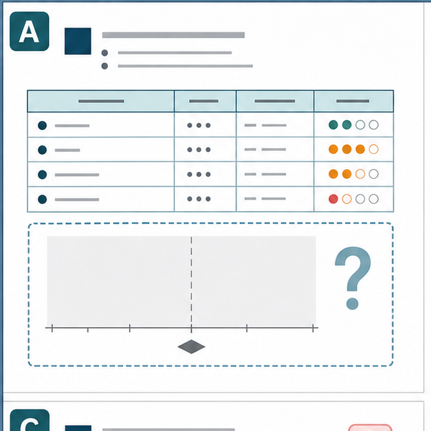
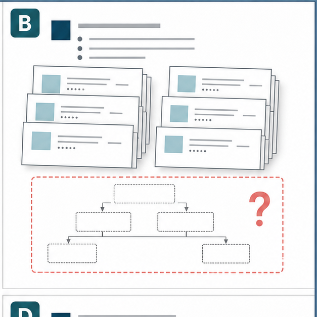
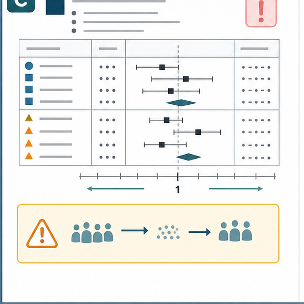
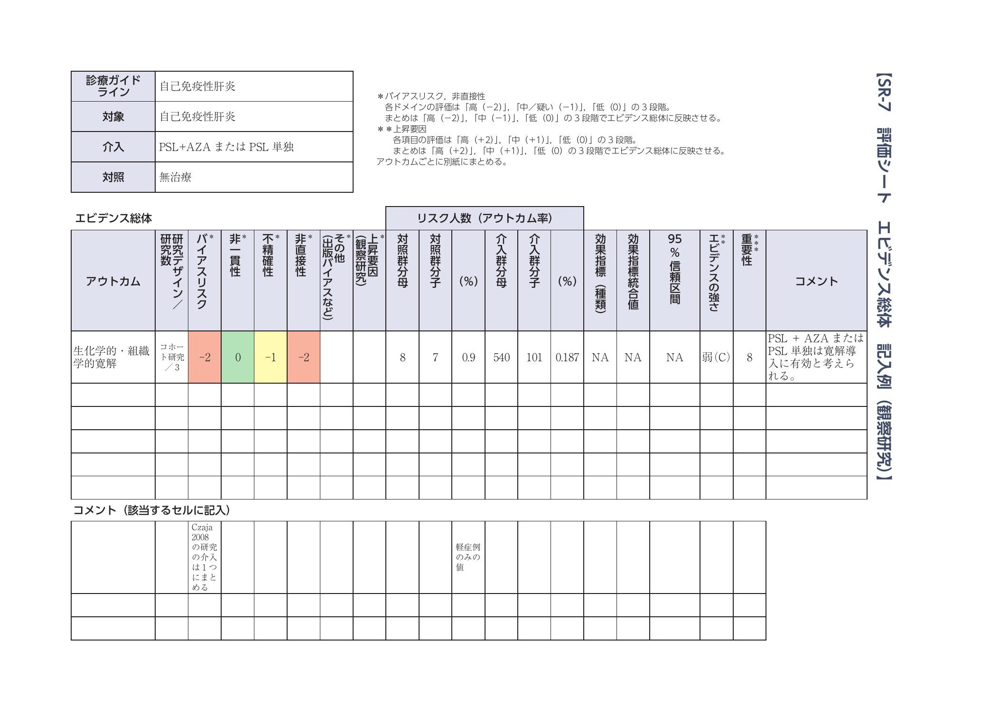
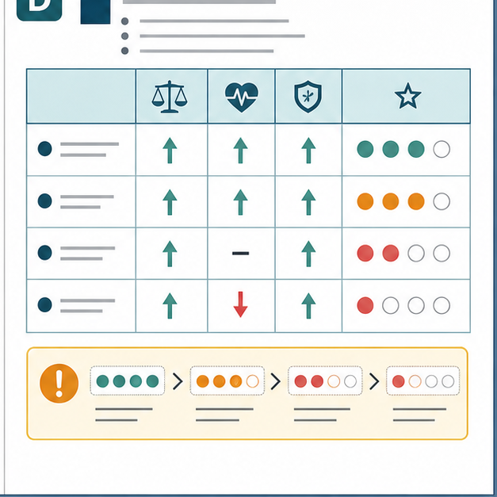

匿名化教育版
本邦CPGトホホ集
本邦における形式的GRADE/Mindsと実質的運用の乖離を、特定の学会・疾患・個別CPGを名指しせずに整理したページです。
ここでは「Mindsに従った」「GRADEを用いた」「SRを行った」と書かれていても、推奨の根拠が十分に追跡できない場合に、読者がどこを見るべきかを解説します。
重要：以下の17項目は、CPGを採点するrating基準ではありません。PICO、文献検索と選択、risk of bias評価、アウトカム別certainty、SoF/Evidence Profile、EtD、推奨方向・推奨強度までの判断の鎖が、読み手に追跡可能かを確認するための読み方リストです。
Mindsの公開テンプレート例を除き、図はChatGPT Images 2.0で作成した匿名化イメージ図であり、実在のCPG・学会資料の転載ではありません。
読むときの基本姿勢
信頼できる推奨かどうかは、方法論の名称ではなく、判断の流れが追跡できるかで確認します。
形式的な完成度が高く見えても、PICOから推奨までの根拠の鎖が切れていれば、GRADEに基づく科学的に妥当な推奨とは限りません。
| 論点 |
読者が確認すべきこと |
| 名称だけのGRADE/SR | PICOから推奨までの判断の鎖が実際に追えるか。 |
| 効果推定値が見えないcertainty | forest plotや各研究の効果推定値、95%信頼区間が提示されているか。 |
| 文献集化したSR | 事前の適格基準、検索、選択、RoB、統合、推奨への接続があるか。 |
| エビデンス階層の混線 | 既存SR/NMA、RCT、観察研究、症例集積を同列に扱っていないか。 |
| 観察研究のraw dataメタ分析 | 交絡を無視した単純なイベント数比較を治療効果として扱っていないか。 |
| 不自然な観察研究certainty | 症例数やp値だけでcertaintyを上げていないか。ROBINS-Iの開始点を理解しているか。 |
| overall certaintyの都合よい選択 | decision-driving outcomeとそのcertaintyが明示されているか。 |
| サロゲートの過大評価 | 患者重要アウトカムとのつながりと非直接性が説明されているか。 |
| p値依存 | 臨床的重要性、信頼区間、同等性・非劣性の条件が評価されているか。 |
| 相対効果依存 | 絶対効果、ベースラインリスク、NNT/NNH、MIDが示されているか。 |
| EtDの形骸化 | 利益害、価値観、負担などが推奨判断へどう接続したか。 |
| 突然の推奨 | エビデンス要約から推奨方向・強度への論理が説明されているか。 |
| 用語・分類の混線 | GRADEのcertaintyと、独自の「エビデンスレベル」「エビデンスの強さ」を混同していないか。 |
| 根拠へ辿れない問題 | SR、EtD、CoSTR、付録、リンク先が読者に追跡可能か。 |
| Good Practice/consensusの誤用 | 「エビデンスがないからGPS」や「合意したから強い推奨」になっていないか。 |
| 対象者・介入・比較のズレ | PICOが臨床現場の対象者・介入の実態とずれていないか。 |
| 複数選択肢の序列が不透明 | 複数介入の関係を脚注、線、並び順だけで示していないか。 |
1. Minds/GRADE/SRと書いてあるが、中身が伴っていない問題
「Mindsに準拠した」「GRADEを用いた」「システマティックレビューを行った」と書かれていても、それだけで信頼できる推奨とは言えません。重要なのは、PICO、文献選択、RoB評価、アウトカム別certainty、SoF/Evidence Profile、EtD、推奨方向・推奨強度までの流れが実際に追えるかです。
これが追えない場合、方法論の名称だけが使われ、実際の判断は専門家の主観や慣習に依存している可能性があります。AGREE IIなどの形式的評価が整って見えても、GRADEに基づく科学的に妥当な推奨であることは別問題です。
つまり、見た目の完成度と推奨の信頼性は同じではありません。読者は、方法章の宣言ではなく、推奨に至る根拠の鎖が本文・付録・公開資料で再現可能かを確認する必要があります。
2. メタ分析やforest plotが見えないままcertaintyを決めている問題
メタ分析がないこと自体は欠陥ではありません。研究数が少ない、アウトカム定義が異なる、異質性が大きい、希少疾患であるなど、メタ分析を行わないことが妥当な場合はあります。
問題は、メタ分析もforest plotもなく、各研究の効果推定値や95%信頼区間も十分に示されないまま、非一貫性・不精確性・overall certaintyが決められている場合です。この場合、どの情報に基づいて「非一貫性に問題なし」「不精確性で格下げ」などと判断したのかが分かりません。
付録に詳細な解析結果やforest plotの記載があることもありますが、付録にあると書かれているのに付録自体へ到達できない、あるいは該当資料の存在が確認できない場合、certainty評価は読者にとって再現不能になります。過年度版にはSRレポートがあるのに最新版では公開されていない場合も、最新版の推奨が何を根拠に更新されたのかを追跡しにくくなります。

匿名化イメージ図：効果推定値やforest plotが見えないままcertaintyだけが示される状況。
3. SRではなく、文献集になっている問題
システマティックレビューとは、単に検索して見つかった論文を並べる作業ではありません。事前にPICOと適格基準を決め、研究を選択し、RoBを評価し、アウトカムごとにエビデンスを統合し、その結果を推奨判断に接続する作業です。
ところが実際には、「検索した結果、いくつかの論文が見つかったので、それぞれを解説した」というだけのものがSRと呼ばれていることがあります。これはSRではなく文献集です。信じられないことですが、SRの作成方法を知らないと思えるCPGも存在します。
文献集では、都合のよい論文が強調されたり、不都合な結果が弱く扱われたりしても、読者が検証しにくくなります。検索式、除外理由、RoB、アウトカム別統合が見えない場合、「SRを行った」という表現だけでは推奨の信頼性を支えられません。

匿名化イメージ図：論文リストはあるが、検索・選択・除外理由・統合方法が追えない状況。
4. SR/NMA、RCT、観察研究、症例集積を同列に扱う問題
既存SRやNMA、RCT、観察研究、症例集積、レビュー論文は、同じ種類のエビデンスではありません。既存SRやNMAは二次研究であり、RCTや観察研究は一次研究です。症例集積は比較効果の推定にはさらに大きな限界があります。
これらを階層化せずに横並びに比較すると、エビデンスの単位が混乱します。既存SRに含まれるRCTを、別の一次研究として再び数えてしまう重複カウントにも注意が必要です。
既存SRや既存CPGを利用すること自体は合理的な場合があります。しかし、その場合でも、既存資料の質、検索日、対象PICOとの一致、含まれる一次研究の重複、最新版で追加された研究をどう扱ったかを明示しなければ、根拠が実際より強く見えてしまいます。
5. 観察研究をraw dataでメタ分析する問題
観察研究では、治療を受けた群と受けなかった群の背景が最初から違います。重症度、年齢、併存疾患、施設、治療選択の理由などが異なるため、単純なイベント数の比較は治療効果ではなく、患者背景の違いを反映している可能性があります。
観察研究から症例数とイベント数だけを抜き出し、RCTと同じようにORやRRを計算してメタ分析することは、統計ソフトでは可能でも疫学的には危険です。調整済みOR/RR/HR、傾向スコア、多変量調整などを考慮しなければ、交絡によって作られた見かけの効果を、治療効果と誤解することになります。

匿名化イメージ図：観察研究の未調整イベント数をそのまま統合してしまう危うさ。
6. 観察研究のcertaintyを不自然に高くする問題
観察研究は、たとえ症例数が多くても、交絡や選択バイアスの問題を避けられません。p値が小さい、症例数が多い、有意差がある、という理由だけでcertaintyを「中」以上にするのは誤りです。
ここで混同されやすいのは、「精度」と「妥当性」です。症例数が多ければ信頼区間は狭くなりますが、バイアスが小さくなるわけではありません。大きなデータであっても、交絡が残っていれば、間違った推定値を非常に精密に出しているだけかもしれません。観察研究のcertaintyを上げるには、GRADEの正当なupgrade理由や、ROBINS-I等による妥当なバイアス評価が必要です。
基本的に観察研究（非ランダム化試験）の場合は、低から始めますが、ROBINS-Iの場合のみ高から始めます。図の例は、高からでも低からでも、「-2，-1，-2」なのに、「低」という不思議な例です。

資料：Minds公開テンプレートの観察研究評価例。出典：Minds 診療ガイドライン作成マニュアル テンプレート（観察研究 記入例）
7. アウトカムが同じ方向だから最高certaintyを採る問題
複数の重大アウトカムがあり、それぞれcertaintyが異なる場合、「同じ方向だから一番高いcertaintyをoverall certaintyにする」という処理は危険です。たとえば、検査値は高certaintyで改善していても、死亡、QOL、重大有害事象は低certaintyかもしれません。
推奨にとって重要なのは、どのアウトカムが意思決定を主導しているかです。すべての重大アウトカムを同じ重みで扱い、都合よく高いcertaintyだけを採用すると、推奨の不確実性が隠れてしまいます。逆に、常に最低certaintyに合わせればよいという単純な話でもありません。必要なのは、decision-driving outcomeを明示し、そのcertaintyと推奨判断の関係を説明することです。

匿名化イメージ図：同じ方向の効果でも、アウトカムごとの重要性とcertaintyは別に読む。
8. サロゲートアウトカムを都合よく使う問題
サロゲートアウトカムを使うこと自体は悪くありません。疾患領域によっては、死亡、発症、QOL、機能などの患者重要アウトカムを直接評価することが難しく、検査値、画像所見、疾患活動性スコア、バイオマーカーなどを使わざるを得ない場合があります。
問題は、サロゲートが患者にとって本当に重要なアウトカムにつながるのかを説明せず、都合のよいサロゲートだけを推奨根拠にすることです。検査値が改善しても、患者の症状、生活の質、生命予後、有害事象が改善するとは限りません。サロゲートを使うなら、その間接性を認め、患者重要アウトカムとの関係を説明し、必要ならcertaintyで非直接性として扱う必要があります。
9. 有意差あり／なしだけで判断する問題
「有意差あり」は「臨床的に重要」という意味ではありません。大規模研究では、患者にとってほとんど意味のない小さな差でもp値が有意になることがあります。一方で、「有意差なし」は「効果がない」「差がない」「同等」「非劣性」を意味しません。
この誤解は、推奨を大きく歪めます。有意差がない研究でも、信頼区間が大きな利益と大きな害の両方を含んでいれば、結論は「分からない」です。同等性や非劣性を主張するには、事前に決めたマージンと信頼区間に基づく評価が必要です。p値だけで推奨方向を決めるのは、臨床判断として不十分です。
10. 相対効果だけで推奨する問題
RR 0.50やOR 0.35のような相対効果は、効果を大きく見せることがあります。しかし、患者にとって重要なのは、多くの場合、絶対効果です。もともとのリスクが非常に低ければ、相対リスクが半分になっても、実際に利益を受ける患者はごく少数かもしれません。
たとえば、発症リスクが0.2%から0.1%になる場合、相対的には50%低下ですが、絶対差は0.1%です。推奨を決めるには、ベースラインリスク、絶対リスク差、NNT/NNH、MID、患者にとって意味のある差を考える必要があります。
HRやRRの有意差だけが本文に示され、絶対効果、最小重要差、患者にとって意味のある差が示されない場合、利益は過大評価されやすくなります。
11. EtDを使ったと書くが、判断過程が見えない問題
EtDは、単に「考慮した」と書くための飾りではありません。エビデンスの確実性、利益と害のバランス、患者の価値観・意向、負担、必要に応じて費用、資源、公平性、実行可能性などを整理し、なぜその推奨方向・推奨強度になったのかを説明するための枠組みです。
Core GRADEの観点では、費用、資源、公平性、実行可能性などは文脈によって扱いが変わり、常に詳細な記載が必須というわけではありません。しかし、患者の価値観・意向や、利益と害のバランスが推奨判断にどうつながったのかは中核的です。
特に、患者の価値観・意向、害の受け止め方、費用や負担をどう扱ったかが見えないまま「総合的に判断した」とだけ書かれている場合、推奨の強さは読者には検証できません。
12. エビデンス要約の直後に推奨が突然出る問題
信頼できるCPGでは、「エビデンスがこうだった」だけでなく、「だからなぜその推奨になったのか」が説明されます。推奨は、効果の大きさ、害、certainty、患者価値観、負担、臨床的文脈を踏まえた判断だからです。
ところが、論文結果を数段落で説明したあと、突然「したがって推奨する」と書かれているCPGがあります。この場合、読者は、推奨方向や推奨強度がどの判断に基づくのかを検証できません。「パネルで合意した」「投票で決めた」という記載も、理由の説明にはなりません。合意形成は重要ですが、合意に至った論理が見えなければ、実質的には専門家意見の追認に近くなります。
推奨文の並び順、脚注、表中の線、合意率だけで判断過程を読ませるのではなく、どのアウトカムが判断を動かし、どの不確実性を受け入れてその推奨になったのかを本文またはEtDで説明する必要があります。
13. エビデンスレベル、エビデンスの強さ、certaintyを混同する問題
GRADEにおけるcertainty of evidenceは、独自分類で用いられるLevel of Evidenceや、一部CPGで使われる「エビデンスの強さ」と同じではありません。分類名が似ていても、評価対象、開始点、格下げ・格上げの考え方、推奨の強さとの関係は異なります。
CPGを読む側は、その文書がGRADEそのものを使っているのか、GRADE風の表現を使っているだけなのか、あるいは独自分類なのかを最初に確認する必要があります。分類の名前だけを見て、GRADEのcertaintyと同じ意味だと受け取ると、推奨の信頼性を過大評価する危険があります。
14. SR、EtD、CoSTR、付録へのリンクが辿れない問題
推奨本文に「SRを参照」「EtDはウェブサイト」「付録を参照」と書かれていても、読者が実際に該当資料へたどり着けなければ透明性は不十分です。リンクがない、リンク先が総合ページで該当箇所が分からない、別階層に置かれている、といった状態では、推奨の検証可能性が大きく落ちます。
国内版CPGが国際組織のSRや推奨を採用・翻案している場合は、元資料、翻案した判断、日本の文脈で変更した点を一続きに示す必要があります。根拠が外部資料に分散しているほど、リンクの到達性と資料間の対応関係が重要になります。
15. Good Practice Statementやconsensusを強い推奨の代用品にする問題
Good Practice Statement（GPS）やbest practice statementは、「エビデンスがないから推奨より弱い声明に落とす」ための箱ではありません。直接的な比較研究は乏しくても、間接的エビデンスと臨床的自明性が非常に強い場合に慎重に使うものです。
consensus-based recommendationと明記しながら、Evidence-based recommendationと同じ表記や同じ強い推奨として扱うと、読者はエビデンスに基づく強い推奨なのか、専門家合意なのかを区別できません。合意の存在とエビデンスの確実性は分けて読ませる必要があります。
16. 対象者・介入・比較が現場の問いとずれている問題
PICOが形式的に書かれていても、実際の対象者や介入の中身が現場の問いとずれていることがあります。同じ介入名でも、実施者、ケアの質、使える薬剤・器具、施設環境が異なれば、直接性は大きく揺らぎます。
CPGを使う側は、「この推奨の対象者は、自分の患者・施設・国の文脈と同じか」を確認しなければなりません。対象者や介入のズレが大きい場合、推奨をそのまま適用するのではなく、非直接性や実行可能性を踏まえた解釈が必要です。
17. 複数の選択肢の序列を、線・脚注・並び順だけで示す問題
複数の治療選択肢を同じCQ内に並べる場合、比較対象が異なる推奨を同列に見せてしまうと、読者はどれを第一選択と考えるべきか分からなくなります。表中の横線、脚注、並び順だけで「実は比較が違う」「実は上位群と下位群がある」と読ませるのは危険です。
必要なのは、各選択肢がどの比較に基づくのか、直接比較か間接比較か、利益と害のバランスがどう違うのかを、推奨文またはEtDで説明することです。読者が線や脚注を推理しないと序列を理解できない構成は、推奨の実装を不安定にします。
参考資料
このページでは、個別CPGの具体的な画像や学会名が分かる資料は使わず、論点を匿名化して再構成しています。Mindsの公開テンプレートだけは出典を明示してそのまま参照しています。